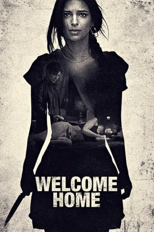

#10461 Welcome Home
 
 IMDB-Wertung: 5.1 / 10
IMDB-Wertung: 5.1 / 10  Tomatometer: 14
Tomatometer: 14  Metascore: 38
Metascore: 38 
Auf den ersten Blick sind Bryan und Cassie ein perfektes Paar, nachdem sich alles umdreht, wenn sie irgendwo langgehen. Doch seit Bryan sie dabei erwischt hat, wie sie ihn betrogen hat, kriselt es in der Beziehung heftig. Daher reisen sie nach Italien, wo sie ein ehemaliges Kloster für eine Woche mieten, um auf dem Land die alte Romantik wieder zu finden. Doch als sich Cassie dort mit dem in der Nähe wohnenden Federico anfreundet, ist Bryan sofort wieder eifersüchtig. Aber das muss er bald beiseite wischen, denn es gehen merkwürdige Dinge vor sich. Welche Rolle spielen dabei Federico und ihr mehr als mysteriöser Vermieter Eduardo? Ehe Bryan und Cassie sich versehen, geht es nicht mehr darum, ob ihre Beziehung die Italienreise überlebt. Die Frage ist vielmehr: Überleben sie den Urlaub?
Jahr: 2018
Dauer: 97 Minuten
FSK: 16
Land: USA Studio: Vertical EntertainmentTonspuren: DTS - ,
Untertitel: Deutsch, Englisch,
Auflösung: 1080p (1920x800) Größe: 4249 MB
Genre: Thriller
Regisseur: George Ratliff
Drehbuch: David Levinson
Soundtrack: Bear McCreary
Darsteller:
 Emily Ratajkowski als Cassie Ryerson
Emily Ratajkowski als Cassie Ryerson Aaron Paul als Bryan Palmer
Aaron Paul als Bryan Palmer Riccardo Scamarcio als Federico
Riccardo Scamarcio als Federico- Katy Louise Saunders als Alessandra
- Nav Ghotra als Indian Woman
- Daphne Alexander als Young Woman
- Federico Riccardo Rossi als Young Man
- Alice Bellagamba als Isabella
- Francesco Acquaroli als Eduardo
- Evgeny Krylov als Russian Teen #1
- Igor Mikhaylov als Russian Teen #2
- Robert Babin als Middle Aged Man
- Sam Mane als Indian Man
Datei: X:\2018(N-Z)\Welcome Home (2018, FSK16, 1920x800).mkv seit 10.01.2019
Festplatte: HD 2018(G-Z)-2019(A-Z)
 Es gibt insgesamt 172 Filme in der Gruppe '2018(N-Z)'
Es gibt insgesamt 172 Filme in der Gruppe '2018(N-Z)'